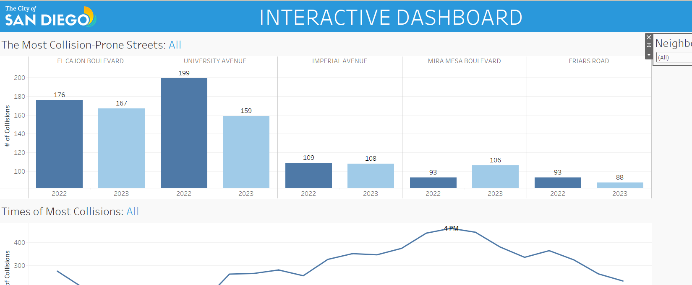

My biggest fear is getting in a car accident. So I thought, why not analyze car accidents! I cleaned and explored when and where the most traffic collisions occur, which areas are increasing/decreasing, and what tends to be the primary charge across all accidents.


My other passion is dancing ... so I obviously had to analyze data relating to dance. In this excel file, I cleaned, explored, and visualized the most popular classes and instructors, discovered insights relating to Cardio Hip Hop, and the percentage of clients who actually pay for class.

Continuing from my SQL cleaning and exploration, I created two dashboards in Tableau for the San Diego Traffic Division Police. The first dashboard is a general report which highlights collisions per neighborhood in 2022 vs 2023 while the second dashboard is an interactive dashboard built to help officers locate which streets cause the most collisions and at what time.